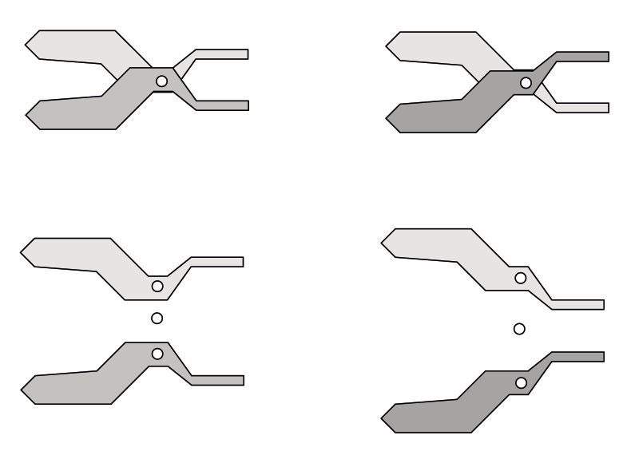

<div class="container">
  <div id="contents" class="col-md-12 main-content"><h1 xmlns="http://www.w3.org/1999/xhtml" id="toc-id-19">Gereedskap met twee of meer hefbome</h1>
    <figcaption xmlns="http://www.w3.org/1999/xhtml"><p>Figuur 1:
'n Tang
bestaan uit twee hefbome wat dieselfde steunpunt gebruik.
</p> </figcaption><div xmlns="http://www.w3.org/1999/xhtml" class="frame-3"></div>
	<figcaption xmlns="http://www.w3.org/1999/xhtml"><p>Figuur 2</p></figcaption><div xmlns="http://www.w3.org/1999/xhtml" class="frame-3"> </div> <figcaption xmlns="http://www.w3.org/1999/xhtml"><p>Figuur 3</p></figcaption> <figcaption xmlns="http://www.w3.org/1999/xhtml"><p>Figuur 4</p></figcaption> <figcaption xmlns="http://www.w3.org/1999/xhtml"><p>Figuur 5</p></figcaption><li xmlns="http://www.w3.org/1999/xhtml">
    <p class="x--Body-investigation-hanging">Wat is die verskil tussen hierdie
twee maniere om 'n skêr te gebruik?
</p>
    <hr/></li>
<li xmlns="http://www.w3.org/1999/xhtml">
    <p class="x--Body-investigation-hanging"> Watter een van die twee maniere
sal die maklikste wees om die dik karton te
sny? Verduidelik jou antwoord.
</p>
    <hr/></li>
    <li xmlns="http://www.w3.org/1999/xhtml">

    <p class="x--Body-investigation-hanging">Is daar enige hefbome in 'n
skêr? Indien wel, hoeveel en watter klas hefbome is
hulle?
</p>
    <hr/></li>
    <li xmlns="http://www.w3.org/1999/xhtml">

    <p class="x--Body-investigation-hanging--1-3- para-style-override-99">
    In diagram A, B en C hieronder, word die
insetkrag op die blou lem met 'n rooi pyl
aangedui. In diagram A word die las op
die blou lem met 'n swart pyl aangedui.
</p>
<ol><li>
    <p class="x--Body-investigation-hanging-a- para-style-override-99">
    Teken 'n pyl om aan te dui waar die
las in beide diagramme B en C is.
</p>

    <div>
      <div class="frame-3"><figure><figcaption><p class="x--caption">Figuur
6: 'n Skêr bestaan eindelik
uit twee
lemme wat aan mekaar verbind is sodat
hulle soos twee hefbome werk.
</p></figcaption></figure></div>

       
    </div>

    <div>
	<figure><div class="frame-3"></div>
	<figcaption><p>Figuur 7</p></figcaption></figure></div></li></ol></li>
	
	<li xmlns="http://www.w3.org/1999/xhtml">
    <p class="x--Body-investigation-hanging"> In watter geval is die meganiese
voordeel van die blou mes die grootse en in
watter geval is dit die kleinste?
</p>
    <hr/></li>
<li xmlns="http://www.w3.org/1999/xhtml">
    <p class="x--Body-investigation-hanging"> In watter geval, of gevalle, is
die meganiese voordeel van die blou hefboom
groter as 1?
</p>
    <hr/></li>
<li xmlns="http://www.w3.org/1999/xhtml">
    <p class="x--Body-investigation-hanging"> <span>Hoekom is 'n gewone
skêr nie geskik om takke van 'n boom af te knip nie?
</span></p>
    <hr/>

    <figure><figcaption><p>Figuur
8</p></figcaption></figure>
</li>
     <li xmlns="http://www.w3.org/1999/xhtml">

    <p class="x--Body-investigation-hanging">Maak 'n vryhandskets van die
soort
skêr wat die takke van 'n boom kan afknip.
Hoekom sal hierdie tipe skêr werk?
</p>
    <hr/></li><div xmlns="http://www.w3.org/1999/xhtml"></div><figure xmlns="http://www.w3.org/1999/xhtml"><figcaption><p>Figuur 9</p></figcaption></figure>
<li xmlns="http://www.w3.org/1999/xhtml" value="3">
    <p class="x--Body-investigation-hanging"> Waarom sal 'n gewone
skêr
nie veel kan help om 'n verfrommelde motor oop te
sny om vasgekeerde passasiers uit te haal nie?
</p>
    <hr/></li>
    <li xmlns="http://www.w3.org/1999/xhtml">

    <p class="x--Body-investigation-hanging">Veronderstel jy moet 'n stuk
snygereedskap ontwerp wat gebruik kan word om
deur metaal te sny. Hoe sal hierdie stuk gereedskap van 'n gewone
skêr
verskil?
</p>
    <hr/></li>
     
<div xmlns="http://www.w3.org/1999/xhtml" class="frame-3"></div>
	<figcaption xmlns="http://www.w3.org/1999/xhtml"><p>Figuur 10 </p></figcaption><li xmlns="http://www.w3.org/1999/xhtml">
    <p class="x--Body-investigation-hanging"> Watter hefboomklas is by elk van
hierdie neutkrakers hierbo gebruik?
</p>
    <hr/></li>
    <li xmlns="http://www.w3.org/1999/xhtml">

    <p class="x--Body-investigation-hanging"> Teken 'n hand, in elke geval
hieronder, om te wys hoe jy die hardste drukking
met jou hand op die neut kan toepas.
</p>

    <figure> <figcaption><p>Figuur 11</p></figcaption></figure></li><li xmlns="http://www.w3.org/1999/xhtml">
    <p class="x--Body-investigation-hanging--1-3-"> Merk en voeg 'n
<b>byskrif
</b>by waar die krag, las en
steunpunt op elk van hierdie tekeninge hierbo sal
wees.
</p>
</li><li xmlns="http://www.w3.org/1999/xhtml">
    <p class="x--Body-investigation-hanging--1-3-">Watter een van hierdie drie
neutkrakers dink jy sal
die beste werk? Verduidelik waarom jy so dink.
</p>
<hr/><div class="aside">
      <p class="x--Body-box-no-indent">'n
“Byskrif” is 'n woord of sin
wat jy langs 'n tekening skryf
om die naam van 'n onderdeel
van die tekening te wys.
</p>
    </div>

    <p class="x--Body-Text">Drie tipes kombuistange en twee pare tange word op
die volgende bladsy gewys.
</p></li>
<li xmlns="http://www.w3.org/1999/xhtml">
    <p class="x--Body-investigation-hanging">Beskryf die verskille tussen
kombuistangtipe A en B.
</p>
    <hr/></li>
<li xmlns="http://www.w3.org/1999/xhtml">
    <p class="x--Body-investigation-hanging"> Hoe verskil kombuistang C van
tipes A en B?
</p>
    <hr/></li>
<li xmlns="http://www.w3.org/1999/xhtml">
    <p class="x--Body-investigation-hanging">Watter een van hierdie drie
kombuistange werk op dieselfde manier as 'n
gewone tang? Verduidelik jou antwoord.
</p>
    <hr/></li>
<li xmlns="http://www.w3.org/1999/xhtml">

    <p class="x--Body-investigation-hanging"> Beskryf 'n situasie waar
'n tang
nuttig sou wees.
</p>
    <hr/></li><li xmlns="http://www.w3.org/1999/xhtml">

    <p class="x--Body-investigation-hanging">Maak 'n vryhandskets van
'n stel
hefbome wat gebruik kan word om 'n doring
uit jou voete te haal.
</p>
</li>
<li xmlns="http://www.w3.org/1999/xhtml">
    <p class="x--Body-investigation-hanging">Watter klas hefboom het jy vir jou
ontwerp gekies in vraag 9 gekies?
</p>
    <hr/></li>
<li xmlns="http://www.w3.org/1999/xhtml">
    <p class="x--Body-investigation-hanging para-style-override-45">Maak 'n
vryhandskets
van 'n stuk gereedskap wat 'n ander klas hefboom
gebruik om dorings mee uit te trek.
</p>

<figure><figcaption><p>Figuur 12</p></figcaption></figure><figure><div class="xlarge"></div>
	<figcaption><p>Figuur 13</p></figcaption></figure></li>
<figcaption xmlns="http://www.w3.org/1999/xhtml"><p>Figure
14</p></figcaption><b xmlns="http://www.w3.org/1999/xhtml">skematiese
diagram
</b> van die naelknipper word op die volgende bladsy gewys.
<figcaption xmlns="http://www.w3.org/1999/xhtml"><p>Figuur
15</p></figcaption><p xmlns="http://www.w3.org/1999/xhtml" class="x--Body-box-no-indent">'n Skematiese diagram wys nie
'n voorwerp soos dit werklik lyk
nie. Dit word geteken om van
die onderdele van die voorwerp
duideliker te wys as wat jy
sien wanneer jy na die werklike
voorwerp kyk.
</p>
    <li xmlns="http://www.w3.org/1999/xhtml">
    <p class="x--Body-investigation-hanging">Kyk na die rooi onderdeel op die
diagram op die volgende bladsy. Dit is 'n
hefboom. Watter hefboomklas is dit soos wat dit in die naelknipper gebruik
word?
</p>
    <hr/></li><li xmlns="http://www.w3.org/1999/xhtml">
    <p class="x--Body-investigation-hanging">Wys die insetkrag en las op die
rooi hefboom met pyltjies en byskrifte. Wys ook
die steunpunt met 'n klein driehoekie en 'n byskrif.
</p>

    <figure><figcaption><p>Figuur
16</p></figcaption></figure>

  </li>  <li xmlns="http://www.w3.org/1999/xhtml">

    <p class="x--Body-investigation-hanging"> Die blou deel van die naelknipper
is 'n hefboompaar. Word hulle gebruik as klas
1-, klas 2- of klas 3-hefbome gebruik?
</p>
    <hr/></li><li xmlns="http://www.w3.org/1999/xhtml">
    <p class="x--Body-investigation-hanging"> Wys die insetkrag en las met
pyltjies en byskrifte op een van die blou hefbome.
Wys ook die steunpunt met 'n klein driehoek en byskrif.
</p>
    <hr/></li><li xmlns="http://www.w3.org/1999/xhtml">
    <p class="x--Body-investigation-hanging"> Is die insetkrag op die onderste
blou hefboom dieselfde as die las op die rooi
hefboom, of nie? Verduidelik jou antwoord.
</p>
    <hr/></li>
 
<li xmlns="http://www.w3.org/1999/xhtml">
    <p class="x--Body-investigation-hanging para-style-override-23"> Kan die
ontwerp
hierbo verander word sodat die naelknipper voorwerpe wat
harder is as vingernaels, soos byvoorbeeld stukkies metaal, kan sny? Maak
'n skematiese tekening om te wys hoe dit gedoen kan word, en verduidelik
waarom so 'n knipper 'n groter meganiese voordeel sal hê as die
een in die
ontwerp hierbo.
</p>
    <hr/>
     

    <div class="Basic-Text-Frame frame-191">
     <div></div></div>
</li>
<span xmlns="http://www.w3.org/1999/xhtml" class="char-style-override-6"><b>meganisme 
</b></span> bestaan uit twee pare klas
1-hefbome. Die paar aan die linkerkant word gebruik
om die paar aan die regterkant “aan te dryf”.
<span xmlns="http://www.w3.org/1999/xhtml" class="char-style-override-6"><b>koppelings
</b></span>, soos die koppelings
wat jy met papierspykers gemaak het toe julle
vroeër die aktiwiteite oor hefbome in die vorige twee
hoofstukke gedoen het.
<p xmlns="http://www.w3.org/1999/xhtml" class="x--Body-box-no-indent">Iets wat ontwerp word om
nuttig te wees wanneer party
van die onderdele daarvan
beweeg word 'n

      <span class="char-style-override-2"><b>meganisme
</b></span> genoem.
</p>
    <figcaption xmlns="http://www.w3.org/1999/xhtml"><p>Figuur
17</p></figcaption><li xmlns="http://www.w3.org/1999/xhtml">
    <p class="x--Body-investigation-hanging"> Wat dink jy is die doel van
hierdie toestel?
</p>
    <hr/></li><li xmlns="http://www.w3.org/1999/xhtml">
    <p class="x--Body-investigation-hanging--1-3-">Watter van die geel
koppelings in die tekening is
steunpunte vir hefbome, en watter koppel gewoon
net een hefboom aan die ander? Wys dit deur
byskrifte op die tekeninge hierbo te skryf.
</p>
</li>
<p xmlns="http://www.w3.org/1999/xhtml" class="x--Body-box-no-indent">Die woord, 
 <span class="char-style-override-2"><b>“sisteem” 
</b></span> word
gebruik vir die beskrywing
van iets wat uit verskillende
onderdele bestaan wat op een
of ander manier met mekaar
verbind is
</p>
    <span xmlns="http://www.w3.org/1999/xhtml" class="char-style-override-6"><b>sisteem
</b></span> van twee klas 1-hefboompare.

  </div>
</div>